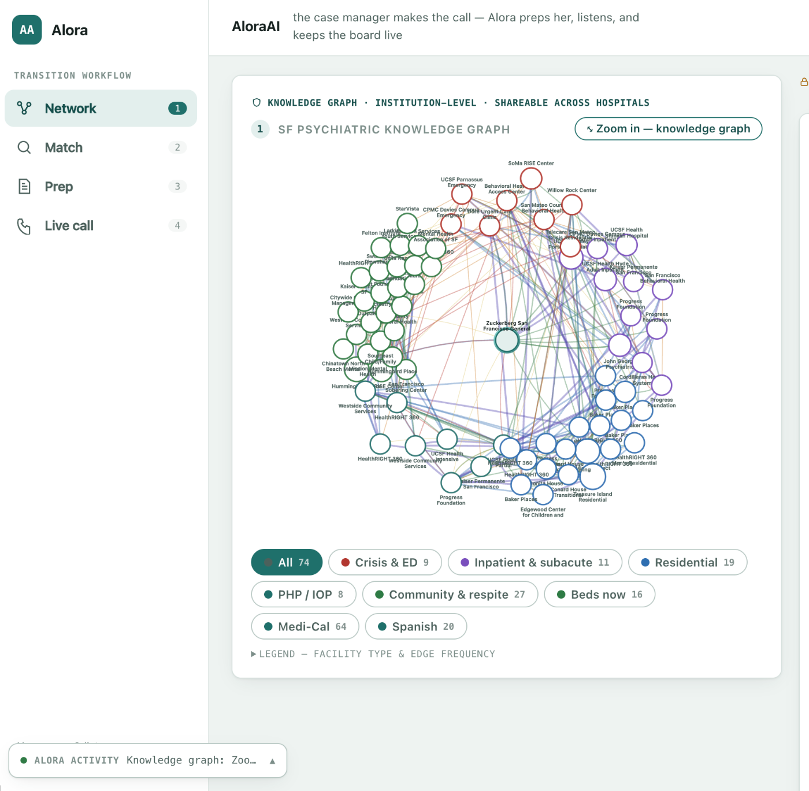

A patient is ready to step down, and a case manager starts working the phones, hoping the bed count someone quoted last week is still true, and that this facility still takes the patient's payer.
By the time a placement lands, the same facts have been re-learned from scratch, on hold, more than once. Nothing about that call gets remembered for the next case manager.
Alora sits in on placement calls and understands what each facility says about open beds, waitlists, payers, and intake requirements, then writes verified facts into a shared, always current map. A human approves every update.
Alora diffs each patient's clinical record against every facility's real requirements, rides along on the call, and surfaces chart-grounded answers, flagging anything the record doesn't support.
The network map re-ranks itself as capacity and requirements change, never further than a click from the source that set it.
